CLIMATE DYNAMICS · 2012
热带季节内振荡的双模态表征
Bimodal representation of the tropical intraseasonal oscillation
Climate Dynamics 38, 1989–2000 · DOI: 10.1007/s00382-011-1159-1
摘要Abstract
摘要 热带季节内振荡（ISO）在北半球冬季和夏季之间表现出不同的变率中心和传播型态。
Abstract The tropical intraseasonal oscillation (ISO) shows distinct variability centers and propagation patterns between boreal winter and summer.
为准确表征一年中任何特定时刻ISO的状态，构建了一种双模态ISO指数。
To accurately represent the state of the ISO at any particular time of a year, a bimodal ISO index was developed.
它由马登–朱利安振荡（MJO）模态和北半球夏季季节内振荡（BSISO）模态组成：前者主要沿赤道向东传播，后者具有显著的向北传播，并在离赤道季风槽区域具有较大的变率。
It consists of Madden-Julian Oscillation (MJO) mode with predominant eastward propagation along the equator and Boreal Summer ISO (BSISO) mode with prominent northward propagation and large variability in off-equatorial monsoon trough regions.
分别利用1979–2009年31年的12月至次年2月和6–8月期间的OLR数据进行扩展经验正交函数分析，识别出MJO和BSISO模态的时空型态。
The spatial–temporal patterns of the MJO and BSISO modes are identified with the extended empirical orthogonal function analysis of 31 years (1979–2009) OLR data for the December–February and June–August period, respectively.
可根据投影到这两种模态上的OLR距平所占比例，判断任何给定时刻ISO的主导模态。
The dominant mode of the ISO at any given time can be judged by the proportions of the OLR anomalies projected onto the two modes.
该双模态ISO指数为主导ISO模态的年变化和年际变化提供了客观且定量的度量。
The bimodal ISO index provides objective and quantitative measures on the annual and interannual variations of the predominant ISO modes.
结果表明，12月至4月由MJO模态主导，而6月至10月由BSISO模态主导。
It is shown that from December to April the MJO mode dominates while from June to October the BSISO mode dominates.
5月和11月为过渡月份，主导模态在这两种模态之间转换。
May and November are transitional months when the predominant mode changes from one to the other.
还表明，基于双模态指数重建的方差占比显著高于基于Wheeler和Hendon指数重建的对应方差占比。
It is also shown that the fractional variance reconstructed based on the bimodal index is significantly higher than the counterpart reconstructed based on the Wheeler and Hendon’s index.
该双模态ISO指数还具有可靠的实时监测能力。
The bimodal ISO index provides a reliable real time monitoring skill, too.
该方法和结果为评估模式再现季节内振荡（ISO）的性能以及进一步开展ISO可预测性研究提供了关键信息，并且也有助于多种科学和实际用途。
The method and results provide critical information in assessing models’ performance to reproduce the ISO and developing further research on predictability of the ISO and are also useful for a variety of scientific and practical purposes.
热带季节内振荡 · MJO · 指数
Tropical intraseasonal oscillation · MJO · Index
1 引言1 Introduction
热带季节内振荡（ISO），或为纪念其发现者而称为马登–朱利安振荡（MJO）（Madden and Julian 1971），其特征周期为30–90（60）天，在调节热带和热带外天气及影响气候方面发挥着基础性作用。
Tropical intraseasonal oscillation (ISO) or referred to as the Madden-Julian oscillation (MJO) in honor of the discoverers (Madden and Julian 1971), characterized by the period of 30–90 (60) days, plays a fundamental role in regulating weather and affecting climate both in the tropics and extra tropics.
使ISO在一定程度上具有如此大影响力的一个显著特征，是其可能与多种空间和时间尺度相互作用，例如日变化（Chen and Houze 1997; Ichikawa and Yasunari 2008）、热带气旋（Maloney and Hartmann 2000a, b; Molinari and Vollaro 2000）、厄尔尼诺（Kessler et al. 1995; Takayabu et al. 1999）、环状模态（Miller et al. 2003），以及亚洲（Yasunari 1979; Kajikawa and Yasunari 2005）、澳大利亚（Hendon and Liebmann 1990; McBride et al. 1995）和北美（Higgins and Shi 2001; Lorenz and Hartmann 2006; Moon et al. 2010）的季风系统。
A remarkable feature, which makes the ISO so influential in part, is its potential interactions with a variety of spatial and temporal scales such as diurnal cycle (Chen and Houze 1997; Ichikawa and Yasunari 2008), tropical cyclones (Maloney and Hartmann 2000a, b; Molinari and Vollaro 2000), El Niño (Kessler et al. 1995; Takayabu et al. 1999), annular modes (Miller et al. 2003), and monsoon systems of Asia (Yasunari 1979; Kajikawa and Yasunari 2005), Australia (Hendon and Liebmann 1990; McBride et al. 1995), and North America (Higgins and Shi 2001; Lorenz and Hartmann 2006; Moon et al. 2010).
ISO的基本特征或许可通过沿赤道的经度—高度剖面得到最佳说明，正如Madden和Julian（1972）开创性工作中的示意性总结所示：在东半球，由中尺度对流系统构成、并与具有最低阶斜压结构的大尺度环流扰动耦合的行星尺度对流距平，以约5 m s−1的速度向东移动。
The fundamental feature of the ISO may be best illustrated in a longitude-height cross sections along the equator as in the schematic summary in their pioneering work by Madden and Julian (1972): A planetary scale convective anomaly consisting of mesoscale convective systems coupled with large-scale circulation disturbance with the gravest baroclinic structure moves eastward at about 5 ms-1 in the eastern hemisphere.
另一方面，在西半球，很少与对流耦合的高层环流扰动以约15–20 m s−1的速度向东移动。
In the western hemisphere, on the other hand, upper-level circulation disturbance rarely coupled with convection moves eastward at a speed of about 15–20 ms-1 .
该环流扰动与赤道开尔文波和罗斯贝波有关（Rui and Wang 1990; Hendon and Salby 1994）。
The circulation disturbance is associated with equatorial Kelvin and Rossby waves (Rui and Wang 1990; Hendon and Salby 1994).
在一些文献中可以找到更为详尽的综述（例如，Madden and Julian 1994; Lau and Waliser 2005; Zhang 2005）。
More thorough reviews can be found in some literatures (e.g., Madden and Julian 1994; Lau and Waliser 2005; Zhang 2005).
这种仅向东移动的ISO的简单描述，尽管常被用于描述ISO的主要特征，却未必适合最好地刻画ISO全年最关键的方面。
Such a simple description of the ISO which moves exclusively eastward, although is often used to describe the major feature of the ISO, may not necessarily be appropriate to best document the crucial aspect of the ISO throughout the year.
观测证据表明，ISO的活动中心和传播型态等性质受到年循环的强烈调控（Madden 1986; Salby and Hendon 1994; Webster et al. 1998; Zhang and Dong 2004）。
There is observational evidence that the properties of the ISO such as activity centers and propagation patterns are strongly regulated by the annual cycle (Madden 1986; Salby and Hendon 1994; Webster et al. 1998; Zhang and Dong 2004).
图1给出了一个例子，展示了ISO传播的年变化，并着重关注东半球；与ISO相关的对流系统在那里显得较为清晰。
An example is given in Fig. 1, which shows annual variation of the ISO propagation with emphasis on the eastern hemisphere where convective systems associated with the ISO rather appear clearly.
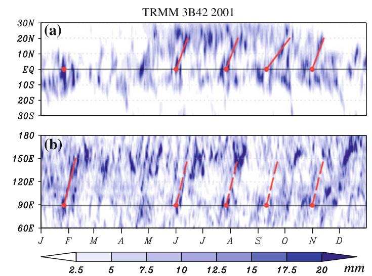
图1 2001年与 ISO 相关的日降水（热带降雨测量任务产品 3B42）。(a) 东印度洋80°–100°E平均区域的纬度—时间图；(b) 7.5°S至7.5°N之间沿赤道的经度—时间图。
Fig. 1 Daily precipitation (tropical rainfall measuring mission product 3B42) associated with the ISO for the year 2001. a Latitude-time plot over the eastern Indian Ocean averaged between 80 and 100°E and (b) longitude-time plot along the equator between 7.5°S and 7.5°N.
每个红色实心圆均表示位于中印度洋（90°E，0°）附近的、与显著 ISO 事件相关的主要对流；这些事件由将在第4节介绍的分析确定（亦见图4）。
Each red closed circles indicates major convection associated with significant ISO events, determined by our analysis to be introduced in Sect. 4 (see also Fig. 4), sitting around the central Indian Ocean (90°E, 0°).
实线和虚线分别显示对应于(a) 约1–2 m s-1的北传和(b) 约6 m s-1的东传的参考相速度。
Solid and dashed lines show reference phase speed corresponding to (a) northward propagation at approximately 1–2 ms-1 and (b) eastward propagation at approximately 6 ms-1 .
实线旨在表示存在相当明显的对流。
The solid lines are intended to represent rather apparent convection exists
存在两种截然不同的传播倾向：在北半球冬季，与ISO相关的组织化对流主要沿赤道向东传播，向极传播很弱；而在北半球夏季，其在北印度洋（以及西北太平洋，未示出）上空表现出显著的向北传播（Yasunari 1979; Knutson and Weickmann 1987; Wang and Rui 1990），同时向东传播减弱。
There are two distinct propagation tendencies: during boreal winter the organized convection associated with the ISO shows predominantly eastward propagation along the equator with little poleward propagation, whereas during boreal summer it shows prominent northward propagation over the northern Indian Ocean (and western North Pacific, not shown) (Yasunari 1979; Knutson and Weickmann 1987; Wang and Rui 1990) with weakened eastward propagation.
传播特征的差异可以解释ISO活动中心的差异（Kemball-Cook and Wang 2001; Zhang 2005）。
The difference in propagation characteristic can account for the difference in the ISO activity centers (Kemball-Cook and Wang 2001; Zhang 2005).
此外，伴随的大尺度环流在北半球冬季表现出相对于赤道的较强对称性，而在北半球夏季则表现为非对称。
In addition, accompanied large-scale circulation shows rather symmetric about the equator during boreal winter, whereas it shows asymmetric during boreal summer.
因此，仅考虑纬向传播分量的最简单模式似乎更适合刻画北半球冬季ISO的行为；而同时考虑经向传播分量和纬向传播分量的更复杂模式，则更适合刻画北半球夏季ISO的行为。
Thus, the simplest model with only zonal propagation component considered appears to be more relevant to document the ISO behavior during boreal winter, and a more complex model with meridional propagation component as well as zonal propagation component considered is more relevant to document the ISO behavior during boreal summer.
考虑ISO的这种年变化至关重要，尤其对于研究ISO与广泛多样的空间和时间尺度之间相互作用的工作而言。
Consideration of such annual variation of the ISO is of critical importance for especially studies on interactions of the ISO with a widespread variety of spatial and temporal scales.
对ISO进行细致处理是分析这些研究的基础，因为预计ISO的不同结构会在天气和气候变化中发挥不同作用。
A meticulous treatment of the ISO is the basis for analyses of those studies, because different structures of the ISO are expected to have different roles in weather and climate variations.
事实上，例如，Kikuchi and Wang（2010）表明，冬季型ISO和夏季型ISO以不同方式影响北印度洋上的热带气旋生成。
In fact, for instance, Kikuchi and Wang (2010) showed that the winter type ISO and the summer type ISO have different manners in which tropical cyclogenesis are affected over the northern Indian Ocean.
本研究的目的是开发一种反映ISO这种年变化的ISO指数。
The purpose of this study is to develop an ISO index which reflects such annual variation of the ISO.
该指数称为双模态ISO指数，依赖于两种不同的ISO模态，它们捕捉了上述两个至日季节的两种不同传播特征。
The index, referred to as the bimodal ISO index, relies on two distinct ISO modes, which capture the aforementioned two distinct propagation features for the two solstice seasons.
利用该方法，可以依据这两种ISO模态忠实地诊断任意特定时刻的ISO状态。
With this method, the state of the ISO at any particular time can be faithfully diagnosed in terms of the two ISO modes.
因此，任何ISO事件均可归类为其中一种ISO模态，这对于研究ISO与大范围时间尺度上天气和气候变化之间的相互作用而言是关键信息。
As a result, any ISO event can be classified into either ISO mode, which is critical information for studies of interactions of the ISO with weather and climate variations on a wide range of timescales.
第2节简要回顾了用于提取ISO信号的方法。
A brief review of methods used to extract ISO signals is presented in Sect. 2.
第3节描述了所使用的数据集和季节内时间滤波器。
Section 3 describes the dataset and intraseasonal time-filter used.
第4节介绍双模态ISO指数，其中还包括一些敏感性试验及其与Wheeler and Hendon（2004）指数的比较。
The bimodal ISO index is introduced in Sect. 4, which also includes some sensitivity tests and a comparison with the Wheeler and Hendon (2004) index.
第5节考察如何利用双模态ISO指数表征ISO。
In Sect. 5, how the ISO can be represented with the bimodal ISO index is examined.
第6节讨论了该指数在实时监测中的应用。
An application of the index to real time monitoring is discussed in Sect. 6.
第7节总结本研究。
Section 7 summarizes this study.
2 提取 ISO 信号的方法综述2 A review of methods used to extract ISO signals
在介绍双模态ISO指数之前，值得回顾已被用于提取ISO信号的方法，尽管其中大多数方法并非旨在构建ISO指数。
Before introducing the bimodal ISO index, it is worth reviewing methods that have been used to extract ISO signals, although majority of these methods were not intended to construct an ISO index.
人们已经采用了复杂程度不同的多种方法。
A variety of methods have been used with various degrees of complexity.
或许最简单的方法是聚焦于特定地点单个变量的季节内波动，并基于该变率刻画ISO行为（例如，Julian and Madden 1981; Hendon and Salby 1994）；而最细致且最全面的方法是追踪法（Wang and Rui 1990; Jones et al. 2004），因为该方法经过精心设计，能够描绘与ISO相关的各种类型的对流行为。
Perhaps the simplest method is to focus on an intraseasonal fluctuation of a single variable at a particular location, and document the ISO behavior based on that variability (e.g., Julian and Madden 1981; Hendon and Salby 1994), while the most meticulous and comprehensive method is a tracking method (Wang and Rui 1990; Jones et al. 2004) as it is carefully designed to depict various types of convective behaviors associated with the ISO.
在这两个极端之间，特征技术已得到广泛应用（表1）。
Between those extremes, Eigen techniques have been widely used (Table 1).
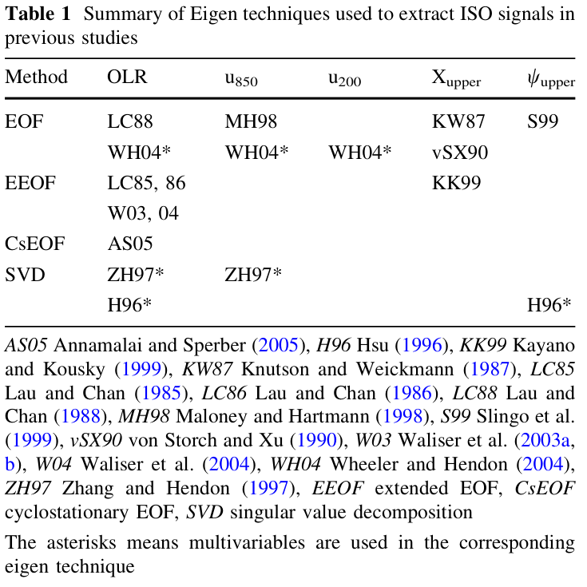
表1 既往研究中用于提取 ISO 信号的特征技术汇总。方法：OLR、u850、u200、Xupper、wupper；EOF：LC88、MH98、KW87、S99、WH04*、WH04*、WH04*、vSX90；EEOF：LC85, 86、KK99、W03, 04；CsEOF：AS05；SVD：ZH97*、ZH97*、H96*、H96*、AS05。Annamalai and Sperber（2005），H96 Hsu（1996），KK99 Kayano and Kousky（1999），KW87 Knutson and Weickmann（1987），LC85 Lau and Chan（1985），LC86 Lau and Chan（1986），LC88 Lau and Chan（1988），MH98 Maloney and Hartmann（1998），S99 Slingo et al.（1999），vSX90 von Storch and Xu（1990），W03 Waliser et al.（2003a, b），W04 Waliser et al.（2004），WH04 Wheeler and Hendon（2004），ZH97 Zhang and Hendon（1997），EEOF：扩展 EOF，CsEOF：周期平稳 EOF，SVD：奇异值分解。星号表示在相应的特征技术中使用了多个变量。
Table 1 Summary of Eigen techniques used to extract ISO signals in previous studies Method OLR u850 u200 Xupper wupper EOF LC88 MH98 KW87 S99 WH04* WH04* WH04* vSX90 EEOF LC85, 86 KK99 W03, 04 CsEOF AS05 SVD ZH97* ZH97* H96* H96* AS05 Annamalai and Sperber (2005), H96 Hsu (1996), KK99 Kayano and Kousky (1999), KW87 Knutson and Weickmann (1987), LC85 Lau and Chan (1985), LC86 Lau and Chan (1986), LC88 Lau and Chan (1988), MH98 Maloney and Hartmann (1998), S99 Slingo et al. (1999), vSX90 von Storch and Xu (1990), W03 Waliser et al. (2003a, b), W04 Waliser et al. (2004), WH04 Wheeler and Hendon (2004), ZH97 Zhang and Hendon (1997), EEOF extended EOF, CsEOF cyclostationary EOF, SVD singular value decomposition The asterisks means multivariables are used in the corresponding eigen technique
特征技术提供了一种便捷方法，可借助经验导出的函数（通常为空间型）描述与季节内振荡（ISO）相关的空间和时间变率。
Eigen techniques provide a convenient method for the description of the spatial and temporal variability associated with the ISO in terms of empirically derived functions (spatial patterns in general).
由于ISO的特征是有组织对流与具有最低阶斜压结构的大尺度环流相耦合，因此，对流、对流层上层和下层环流等变量适合用于分离ISO相关变率。
Since the ISO is characterized by organized convection coupled with large-scale circulation with the gravest baroclinic structure, such variables as convection, the upper- and lower-tropospheric circulation are relevant to isolating variations associated with the ISO.
事实上，基于不同变量（以及不同方法）的ISO合成生命周期，对于任何特定季节均产生一致的ISO行为结构（参考文献见表1）。
In fact, composite life cycles of the ISO based on different variables (and also different methods) produce consistent structures in the ISO behavior for any particular season (references are in Table 1).
尤为重要的是Wheeler和Hendon（2004）的研究（以下简称WH04）；该开创性工作引入了用于实时监测的全年ISO指数，并且它已成为最流行的ISO指数。
Of particular importance is the study by Wheeler and Hendon (2004) (refer to as WH04 hereafter), pioneering work introducing all-season ISO index for real time monitoring and it has become the most popular ISO index.
其方法的独特之处在于，使用在15°S至15°N之间经向平均的组合变量（OLR以及850和200 hPa的纬向风），主要通过聚焦于全年与ISO相关的对流和大尺度环流的相干结构、而不使用常规时间滤波器，来去除较高频变率。
The uniqueness of their method is to use the combined variables (OLR and zonal winds at 850 and 200 hPa) meridionally averaged between 15°S and 15°N in order primarily to remove higher-frequency variability by focusing on the coherent structure of convection and large-scale circulations associated with the ISO throughout the year without use of ordinary time filters.
第6节将讨论实时监测的更详细程序。
More detailed procedure for real time monitoring is discussed in Sect. 6.
另一个需要强调的是扩展经验正交函数（EEOF）分析（Weare and Nasstrom 1982）。
Another emphasis to be put is on the extended EOF (EEOF) analysis (Weare and Nasstrom 1982).
EEOF分析的一个独特特点是，它通过将EOF分析扩展至一段连续时次而聚焦于连续的时空演变，因而可能更适合记录传播现象。
The EEOF analysis has a unique feature that it focuses on a sequential spatial-temporal evolution by extension of the EOF analysis to a segment of consecutive times, and thereby it may be more appropriate to document a phenomenon that propagates.
换言之，可以认为它具有一种追踪方法的性质。
In other words, it can be thought to have the nature of a tracking method.
纳入适当的一系列连续时间点时，前两个EEOF可构成的一对能够表征ISO的半个周期（Lau and Chan 1985, 1986）；而纳入较长的一系列时间点时，仅第一个EEOF即可表征ISO的一个完整周期（Kayano and Kousky 1999）或多个周期（Waliser et al. 2003a, 2004）。
With appropriate series of successive time points included, a pair of the first two EEOFs can represent a half cycle of the ISO (Lau and Chan 1985, 1986), whereas, with longer series of time points included the first EEOF alone can represent a whole cycle (Kayano and Kousky 1999) or more cycles (Waliser et al. 2003a, 2004) of the ISO.
3 数据和季节内时间滤波3 Data and intraseasonal time filter
鉴于数据可用性，除第6节将讨论的实时监测外，我们的分析基于1979至2009年的31年数据集。
Given the data availability, our analysis is based on a 31 year dataset from 1979 to 2009 except for real-time monitoring to be discussed in Sect. 6.
如第2节所述，为分离出与ISO相关的变率，参照对流、对流层上层和下层环流等一个或一些变量是合理的。
As mentioned in Sect. 2, referring to one or some of such variables as convection, the upper- and lower-tropospheric circulation is reasonable to isolate variations associated with the ISO.
其中，作为热带有组织对流良好替代指标的OLR数据已被广泛使用。
Among them the OLR data, a good proxy for organized convection in the tropics, have been widely used.
由于行星尺度对流距平是ISO的主要特征之一且是主要关注对象，我们还使用了水平分辨率为2.5°的逐日OLR数据（Liebmann and Smith 1996），以识别典型ISO模态和显著ISO事件。
Since the planetary scale convective anomaly is among the major characteristics of the ISO and of primary interest, we also used daily OLR data with 2.5° horizontal resolution (Liebmann and Smith 1996) to identify typical ISO modes and significant ISO events.
采用了由NASA戈达德空间飞行中心全球建模和同化办公室（GMAO）开发的现代研究与应用回顾分析（MERRA）产品（inst6_3d_ana_Np）的850 hPa逐日平均水平风，以刻画与ISO对流相关的大尺度环流（Bosilovich et al. 2006）。
Daily mean horizontal winds at 850 hPa of the Modern Era Retrospective-analysis for Research and Applications (MERRA) product (inst6_3d_ana_Np) developed by the Global Modeling and Assimilation Office (GMAO) at the NASA Goddard Space Flight Center (Bosilovich et al. 2006) were used to document large-scale circulations associated with the ISO convection.
该数据集属于最先进的再分析资料，其生成旨在减少过去30年观测系统变化，尤其是新卫星引入所造成的偏差。
The dataset is among the state-of-the-art reanalysis, which was produced in an attempt to reduce biases stemming from observing system changes occurred over the past three decades, notably introduction of new satellites.
我们的分析使用了水平分辨率为2.5°的数据，该数据通过降低原始经度–纬度分辨率2/3° × 0.5°而生成。
The data with 2.5° horizontal resolution, which was created by reducing the original resolution of 2/3° × 0.5° in longitude-latitude, was used for our analysis.
为提取季节内时间尺度上的变率，对逐日OLR数据和MERRA再分析资料应用了截止周期为25和90天、具有139个权重的Lanczos带通滤波器（Duchon 1979）。
To extract variations on intraseasonal timescale, Lanczos band-pass filter (Duchon 1979) with cut-off periods 25 and 90 days and 139 weights is applied to the daily OLR data and the MERRA reanalysis.
下文将此滤波器称为季节内时间滤波器。
This filter is referred to as the intraseasonal time-filter hereafter.
由于无法进行完整卷积，舍弃了记录两端各70个点。
Seventy points from either ends of the record were discarded because the full convolution cannot be performed.
由于北半球夏季的ISO往往表现出接近30天的较短周期（Wang et al. 2006），带通滤波器的带宽设定得比通常略宽（25–90天，而非30–90天）。
Because the ISO during boreal summer tends to show shorter period of near 30 days (Wang et al. 2006), the bandwidth of the band-pass filter was set somewhat wider than usual (25–90 day instead of 30–90 day).
无论选择哪种带宽，随后将展示的结果均几乎不受影响。
The results to be shown later are little affected no matter which bandwidth is selected.
4 双模态 ISO 指数简介4 Introduction to the bimodal ISO index
本研究的主要目标是开发一种ISO指数，该指数通过考虑ISO行为的年变化，能够忠实表征一年中ISO的状态。
The main goal of this study is to develop an ISO index that faithfully represents the state of the ISO over the course of a year by taking the annual variations of the ISO behavior into account.
ISO方差的水平分布表明，在北半球夏季，向北传播相对于向东传播占主导地位（见Zhang 2005的图9）。
The horizontal distribution of the ISO variance suggests that northward propagation predominates over the eastward propagation during boreal summer (see Fig. 9 in Zhang 2005).
因此，除向东传播外，在某些季节捕捉向北传播也是理想ISO指数所应具备的属性。
As such, in addition to the eastward propagation, capturing the northward propagation is a desirable attribute of an ideal ISO index in some seasons.
EEOF分析能够记录详细的时空演变，因而或许最适于捕捉这类细致的传播特征。
With the ability to document a detailed spatial-temporal evolution, the EEOF analysis is probably most suitable for capturing such detailed propagation features.
鉴于观测证据表明ISO在两个至日季节之间表现出截然不同的行为，我们基于分别在各至日季节占主导地位的两种典型ISO模态构建一个指数，以便不仅在北半球冬季而且在北半球冬季，均依据这些特性测量ISO的状态。
Given the observational evidence that the ISO shows contrasting behaviors between the two solstice seasons, we construct an index based on two typical ISO modes predominant for each solstice season in order that the state of the ISO are measured in terms of the properties not only during boreal winter but also during boreal winter.
4.1 双模态 ISO 指数：MJO 模态与 BSISO 模态4.1 The bimodal ISO index: the MJO mode and the BSISO mode
定义了两种不同的典型ISO模态：在北半球冬季占主导地位的模态（为纪念发现者而称为MJO模态）以及在北半球夏季占主导地位的模态（称为北半球夏季季节内振荡（BSISO）模态）。
Two distinct typical ISO modes, predominant during boreal winter (referred to as the MJO mode in honor of the discoverers) and during boreal summer (referred to as the BSISO mode), are defined.
为更好地描述ISO的状态，我们采用了与Lau and Chan（1985, 1986）相类似的EEOF分析设置；将具有−10天和−5天滞后的EEOF分析应用于30°S至30°N整个热带区域的经季节内时间滤波的OLR数据。
To better describe the state of the ISO, we took an analogous setting for the EEOF analysis as Lau and Chan (1985, 1986); The EEOF analysis with -10 and -5 day lags was applied to the intraseasonal time-filtered OLR data in the entire tropics between 30°S and 30°N.
出于将其应用于实时监测的考虑，时间滞后以这种方式选取。
The time lag was chosen in this way because of consideration of its application to real time monitoring.
为提取MJO（BSISO）模态，选取了12月至2月（6–8月）这一数据时段。
To derive the MJO (BSISO) mode the data period from December to February (June–August) was selected.
正如先前研究所预期的，对于两种模态，前两个EEOF构成的一对代表季节内振荡的半个周期（图2）。
As expected from the previous studies, a pair of the first two EEOFs represents a half cycle of the ISO for both modes (Fig. 2).
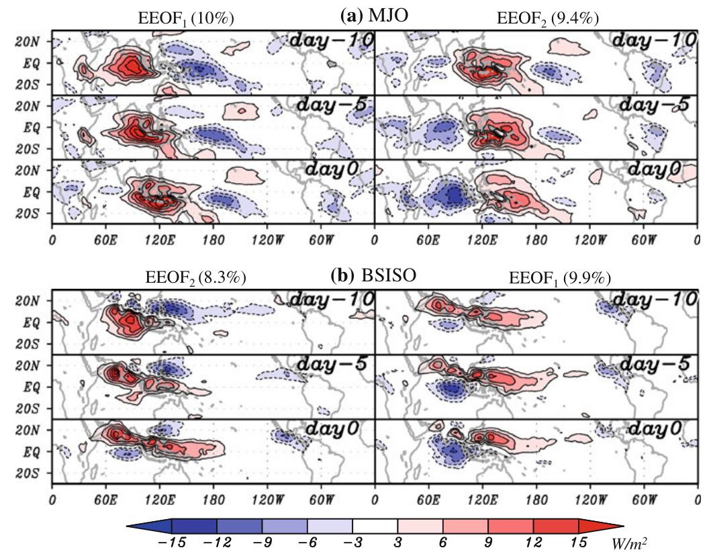
图2 通过扩展经验正交函数（EEOF）分析得到的与季节内振荡相关的向外长波辐射（OLR）距平的时空型：（a）北半球冬季（DJF，称为MJO模态）和（b）北半球夏季（JJA，称为BSISO模态）。
Fig. 2 Spatial-temporal pattern of OLR anomaly associated with the intraseasonal oscillation during (a) boreal winter (DJF, referred to as MJO mode) and (b) boreal summer (JJA, referred to as BSISO mode) by means of the extended EOF (EEOF) analysis.
对施加了25–90天带通滤波的长期OLR距平（1979–2009）进行了EEOF分析，采用3个不同时间步长，时间增量为5天。
The EEOF analysis with three different time steps with 5 day time increment was applied to long-term OLR anomaly (1979–2009) with 25–90 day bandpass filter applied.
括号中的数字表示各模态对总方差的相对贡献。
The numbers in the brackets shows the relative contribution of each mode to total variance.
OLR值乘以进行各EEOF分析期间相应主成分的一个标准差。
OLR values are multiplied by one standard deviation of the corresponding principal components during the period each EEOF analysis was performed.
注意，为便于展示，EEOF的显示方式使得与季节内振荡相关的有组织对流在左图第0天开始出现在印度洋。
Note that the EEOFs are displayed in a way that the organized convection associated with the ISO starts to appear in the Indian Ocean at day 0 in the left panel for convenience
MJO模态显示出沿赤道占主导地位的东传，这与MJO的经典观点一致（Madden and Julian 1972）。
The MJO mode shows a predominant eastward propagation along the equator that is in accordance with the classical view of the MJO (Madden and Julian 1972).
BSISO模态显示出在北印度洋上空显著的北传，以及沿赤道较弱的东传，最终形成一条自西北向东南倾斜、覆盖从阿拉伯海到西太平洋广阔范围的细长对流带。
The BSISO mode shows a prominent northward propagation over the northern Indian Ocean with weaker eastward propagation along the equator, which eventually makes an elongated convective band tilting from northwest to southeast covering a wide range from the Arabian Sea to the western Pacific.
在西北太平洋上空还可见另一种显著的西北向传播。
Another prominent northwestward propagation is seen over the western North Pacific.
BSISO模态这些颇为复杂的特征与近期一项采用TRMM卫星降水数据的合成研究高度一致（Wang et al. 2006）。
These rather complicated features of the BSISO mode are in good agreement with a recent composite study using TRMM satellite precipitation data (Wang et al. 2006).
显然，MJO模态和BSISO模态的生命周期具有不同的特征。
Evidently, the lifecycle of the MJO mode and the BSISO mode have distinctive characteristics.
双模态ISO指数以这两种ISO模态为基础。
The bimodal ISO index is based on these two ISO modes.
任一给定时刻MJO模态和BSISO模态的EEOF系数（以下简称主成分，PC）可通过将季节内时间滤波后的OLR场投影到各模态上获得。
The EEOF coefficients (principal components, PCs hereafter) of the MJO mode and the BSISO mode at any given time can be obtained by projecting the intraseasonal time-filtered OLR fields onto each mode.
MJO模态和BSISO模态的强度及位相可由每个模态的前两个PC的组合来描述。
The strength and the phase of the MJO mode and the BSISO mode can be described by a combination of the first two PCs for each mode.
这是构建双模态ISO指数的基本步骤。
This is the fundamental step for constructing the bimodal ISO index.
然而，如何利用双模态ISO指数可能取决于具体分析。
How to utilize the bimodal ISO index, however, might depend on analysis.
下面我们提供一个例子，这可能是最直接的方法之一。
In the following, we provide an example, which would be one of the most straightforward ways.
对于大多数实际应用，可能需要识别显著ISO事件（步骤1）。
For most practical applications, one may want to identify significant ISO events (Step 1).
为此，通常使用归一化振幅 A*mode = sqrt[(PC*1,mode)^2 + (PC*2,mode)^2]，其中PC*为在EEOF分析时段内以一个标准差归一化的PC，且“mode”表示MJO模态或BSISO模态。
For that purpose, the normalized amplitude A*mode = sqrt[(PC*1,mode)^2 + (PC*2,mode)^2] is usually used, where PC* is the PC normalized by one standard deviation during the period of the EEOF analysis and 'mode' denotes either the MJO or BSISO mode.
准则 A*mode ≥ 1 或许是显著事件最常用的定义（例如，Wheeler and Hendon 2004）。
The criterion A*mode ≥ 1 is perhaps the most popular definition of a significant event (e.g., Wheeler and Hendon 2004).
因此，可根据以下ISO模态识别显著ISO事件：（1）MJO模态，（2）BSISO模态，以及（3）MJO模态和BSISO模态两者。
As a result, significant ISO events can be identified in terms of the following ISO modes: (1) the MJO mode, (2) the BSISO mode, and (3) both the MJO mode and the BSISO mode.
尽管步骤1中列出的信息对于某些分析是有用的，但在许多情况下，进一步确定占主导地位的模态，即哪一种模态主导ISO事件，更为实用（步骤2）。
Although, the information listed in step 1 is useful for certain analyses, in many cases it is more practical to further determine the predominant mode, i.e. which mode dominates the ISO event (Step 2).
这可以通过假定给定时刻占主导地位的ISO模态占总方差中较大部分来实现。
This can be accomplished by assuming that the predominant ISO mode at a given time accounts for a larger amount of the total variance.
时刻t由各模态重建的OLR距平为 OLRmode(t) = EEOF1,mode × PC1,mode(t) + EEOF2,mode × PC2,mode(t) (1)，其中OLR(t)包括−10天和−5天以及第0天的空间型。
The reconstructed OLR anomalies by each mode at time t are given by OLRmode(t) = EEOF1,mode × PC1,mode(t) + EEOF2,mode × PC2,mode(t) (1), where OLR(t) includes spatial patterns at −10 and −5 days as well as day 0.
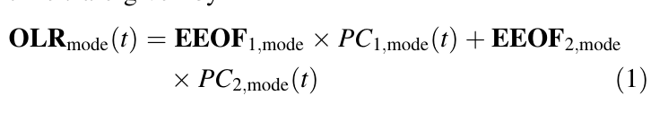
借助EEOF的正交性，各模态重建型的范数（方差）为 ||OLRmode(t)|| = sqrt[PC1,mode(t)^2 + PC2,mode(t)^2] (2)。
With the aid of the orthogonality of the EEOF, the norm (variance) of the reconstructed pattern of each mode is given by ||OLRmode(t)|| = sqrt[PC1,mode(t)^2 + PC2,mode(t)^2] (2).
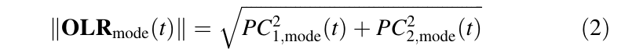
比较MJO模态与BSISO模态的式（2），即可得到时刻t的主导模态。
A comparison of (2) between the MJO mode and the BSISO mode yields the predominant mode at time t.
本研究采用的、依据MJO模态和BSISO模态识别显著ISO事件的程序总结于图3。
The procedure employed in this study for identifying significant ISO events in terms of the MJO mode and the BSISO mode is summarized in Fig. 3.
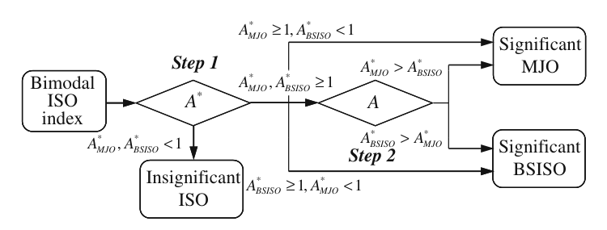
图3 根据MJO模态和BSISO模态识别显著季节内振荡事件的流程图。
Fig. 3 Flowchart summarizes the procedure for identifying significant ISO events in terms of the MJO mode and the BSISO mode
为说明该程序如何运作，图4展示了由式（2）表示的MJO振幅相对于BSISO振幅的散点图。
To see how the procedure works, Fig. 4 shows a scatter plot of the MJO amplitude versus the BSISO amplitude represented by (2).
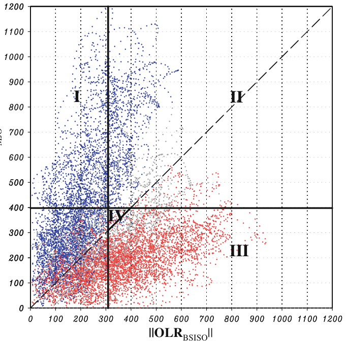
图4 1979–2009年期间，以BSISO模态（x轴）和MJO模态（y轴）表征的季节内振荡振幅散点图。
Fig. 4 Scatter plot of ISO amplitude in terms of the BSISO mode (x axis) and the MJO mode (y axis) for the period 1979–2009.
平行于x轴和y轴的实线表示进行各EEOF分析期间每个季节内振荡模态的一个标准差（sqrt(PC1² + PC2²)）。
Solid lines parallel to the x and y axes represent one standard deviation of each ISO mode (sqrt(PC1² + PC2²)) during the period each EEOF analysis was performed.
虚线表示MJO模态和BSISO模态具有相同方差的情形。
Dashed line represents the situation when both the MJO mode and the BSISO mode have the same variance.
根据后文对图8的讨论，三个季节以不同颜色表示（6–10月为红色，12–4月为蓝色，其他月份为灰色）。
According to the later discussion about Fig. 8, three seasons are in different colors (June–October in red, December–April in blue, otherwise in gray)
每条参考实线实际上都为依据 MJO 模态或 BSISO 模态判定显著 ISO 事件提供了一条准则；在实际应用中，使用归一化振幅 A* 而非未归一化振幅来判定 ISO 的状态。
Each of the reference solid lines provides a virtually criterion for significant ISO events in terms of either the MJO mode or the BSISO mode; the normalized amplitude, A* , instead of the unnormalized amplitude is used to judge the state of the ISO for practical application.
注意，两种模态之间参考振幅的差异反映了ISO强度的季节变化。
Note that the difference in the reference amplitude between the two modes reflects the seasonal variations in the ISO strength.
尤其重要的是，散点图中存在两类可以很好区分的事件簇。
Of particular importance is that there are two clusters of events that can be separated very well in the scatter plot.
大多数显著ISO事件可容易地归入MJO模态（区域I）或BSISO模态（区域III）。
Most of the significant ISO events are readily assigned to either the MJO mode (region I) or the BSISO mode (region III).
即使在MJO模态和BSISO模态均具有较大振幅（区域II）的情况下，两种模态振幅几乎相同的情形也很少发生，因此仍可容易地确定占优势的模态。
Even in the case when both the MJO mode and the BSISO mode have substantial amplitude (region II), the situation in which the two modes have almost the same amplitude rarely occurs, and hence the prevailing mode remains to be easily determined.
一种特殊情况发生在：一个被视为不显著MJO事件的显著BSISO事件，就MJO模态而言的方差大于就BSISO模态而言的方差（区域IV）。
One peculiar situation occurs when a significant BSISO event regarded as an insignificant MJO event has larger variance in terms of the MJO mode than in terms of the BSISO mode (region IV).
然而，这种情况相当罕见，因此如何处理它对统计分析结果影响很小。
This situation, however, is quite rare and thus how to treat it little affects the statistical analysis results.
总之，在双模态ISO指数中，ISO的状态可用MJO模态和BSISO模态来表示；在任何特定时刻哪一种模态描述得更好，都可以合理地识别出来。
In summary, in the bimodal ISO index the state of the ISO can be expressed in terms of the MJO mode and the BSISO mode; which mode better describes at any particular time can be reasonably identified.
4.2 与 Wheeler–Hendon 指数比较4.2 Comparison with Wheeler and Hendon’s index
结合图5所示的一个实例，讨论了双模态ISO指数与WH04指数的比较。
A comparison of the bimodal ISO index with WH04 index is discussed in terms of an example shown in Fig. 5.
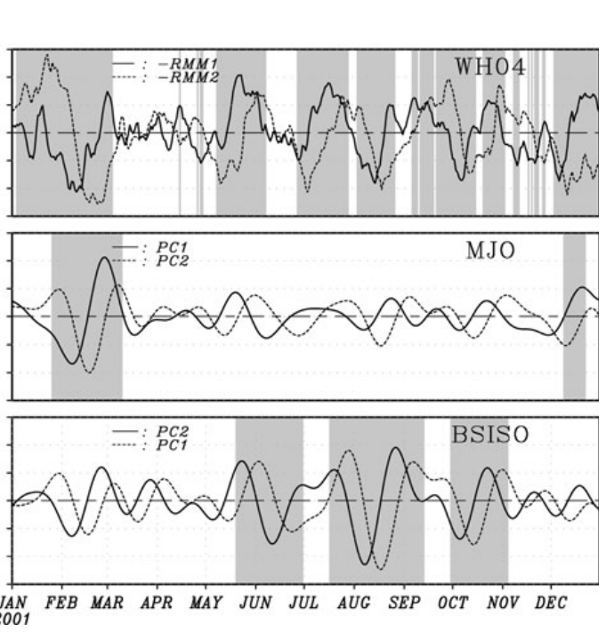
图5 2001年WH04（上）、MJO（中）和BSISO（下）的季节内振荡指数比较。
Fig. 5 A comparison of the ISO index between the WH04 (upper), the MJO (middle) and the BSISO (lower) for the year 2001.
注意，为获得EEOF，各PC均以进行相应EEOF分析期间对应PC的一个标准差进行归一化。
Note that each PC is normalized by one standard deviation of the corresponding PCs during the period each EEOF analysis was performed to obtain the EEOFs.
显著季节内振荡事件以背景阴影表示。
Significant ISO events are shaded in the background
对于给定年份，WH04指数的振幅似乎没有显著变化，只有在年初时振幅略大于一年中其余时间。
The amplitude of the WH04 index for this given year does not seem to vary significantly except in the beginning of the year when the amplitude is slightly larger than the rest of the year.
另一方面，MJO模态和BSISO模态的振幅具有显著的季节变化。
The MJO mode and the BSISO mode, on the other hand, have substantial seasonal variations in amplitude.
自然地，MJO（BSISO）模态的振幅在北半球冬季（夏季）较大。
Naturally, the amplitude of the MJO (BSISO) mode is larger during boreal winter (summer).
由于缺少高频成分，MJO模态和BSISO模态的时间序列比其WH04对应序列更平滑。
The time series of the MJO mode and the BSISO mode are smoother due to the absence of higher-frequency component than that of the WH04 counterpart.
如表2所示，在整个时期内，MJO模态和BSISO模态与WH04指数的相关性均在99%水平上具有统计显著性。
As shown in Table 2, the correlations of the MJO mode and the BSISO mode with the WH04 index are statistically significant at the 99% level for the entire period.
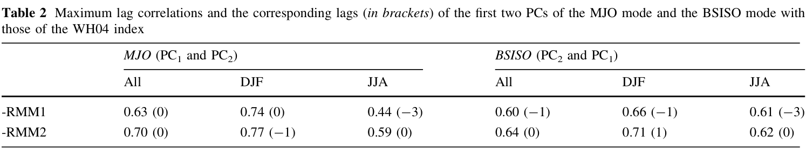
表2 MJO模态和BSISO模态的前两个PC与WH04指数前两个PC之间的最大滞后相关及其对应滞后（括号内）。MJO（PC1和PC2） BSISO（PC2和PC1） 全部 DJF JJA 全部 DJF JJA -RMM1 0.63 (0) 0.74 (0) 0.44 (-3) 0.60 (-1) 0.66 (-1) 0.61 (-3) -RMM2 0.70 (0) 0.77 (-1) 0.59 (0) 0.64 (0) 0.71 (1) 0.62 (0)
Table 2 Maximum lag correlations and the corresponding lags (in brackets) of the first two PCs of the MJO mode and the BSISO mode with those of the WH04 index MJO (PC1 and PC2) BSISO (PC2 and PC1) All DJF JJA All DJF JJA -RMM1 0.63 (0) 0.74 (0) 0.44 (-3) 0.60 (-1) 0.66 (-1) 0.61 (-3) -RMM2 0.70 (0) 0.77 (-1) 0.59 (0) 0.64 (0) 0.71 (1) 0.62 (0)
值得注意的是，WH04指数与MJO模态和BSISO模态两者的相关性在北半球冬季均变得更大。
Of note is that the correlations of the WH04 index with both the MJO mode and the BSISO mode become larger during boreal winter.
正如预期，由于显著的东传和较大振幅，WH04指数能更好地表征北半球冬季的ISO行为。
As expected, the WH04 index better represents the ISO behavior during boreal winter because of the pronounced eastward propagation and large amplitude.
北半球夏季显著但较低的相关性可能反映出，由于该季节显著的北传，仅由东传分量表征ISO振幅会造成误表征。
Significant but lower correlations during boreal summer may be a reflection that the ISO amplitude is misrepresented by the eastward propagating component alone because of the prominent northward propagation during that season.
再次，双模态ISO指数提供了关于在特定时刻哪一类ISO模态占主导地位的更详细信息。
Again, the bimodal ISO index gives more detailed information on which type of the ISO mode is predominant at a particular time.
那么，哪一种ISO指数能更好地表征与ISO相关的变化？
Then which ISO index better represents variations associated with the ISO?
为回答这一问题，针对两个至日季节，基于双模态ISO指数和WH04指数构建了合成生命周期。
In order to answer this question, composite life cycles were constructed based on the bimodal ISO index and the WH04 index for the two solstice seasons.
图6显示了每个合成所解释的方差占比。
Figure 6 shows fractional variance explained by each composite.
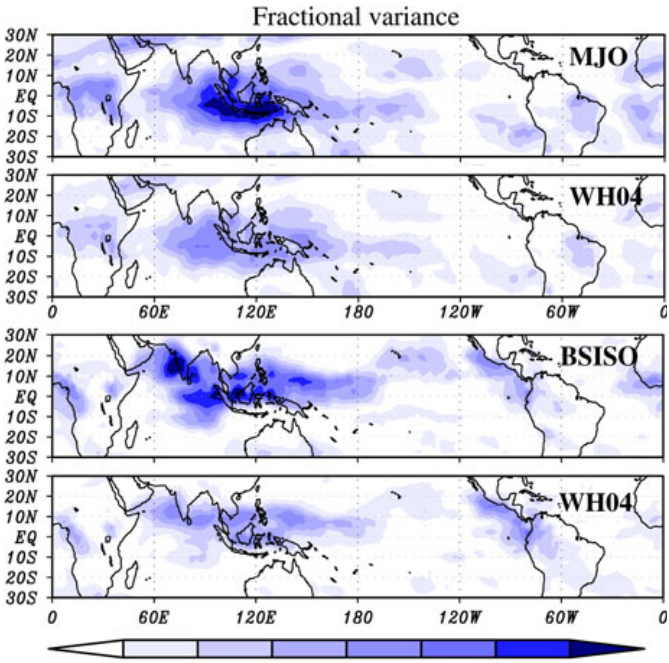
图6 1979–2009年期间，基于双模态季节内振荡指数（上图）和WH04指数（下图）的OLR季节内振荡合成的方差占比，分别对应北半球冬季（左图）和夏季（右图）。
Fig. 6 Fractional variance of ISO composites in terms of OLR based on the bimodal ISO index (upper panels) and WH04 index (lower panels) during boreal winter (left panels) and summer (right panels) for the period 1979–2009.
方差占比定义为经历其生命周期的季节内振荡合成的方差与季节内（25–90天）波动总方差之比。
The fractional variance is defined as the ratio of the variance of the ISO composite which undergoes through its life cycle to the total variance of the intraseasonal (25–90 day) fluctuation.
采用WH04指数的合成生命周期以与WH04相同的方式构建。
The composite lifecycle with WH04 index was constructed in the same manner as WH04.
采用双模态季节内振荡指数的生命周期以类似方式构建，如第4.1节所述；但为进行公平比较，调整了基于A*确定显著季节内振荡事件的判据，使得用于构建合成的总天数（样本数）在两个指数之间相同（DJF为1,726，JJA为1,579）。
The lifecycle with the bimodal ISO index was constructed in a similar way, which was descried in Sect. 4.1 except that, for a fair comparison, the criterion for determining significant ISO events based on A* was adjusted so that the total number of days (samples) used to construct the composite are the same between the two indices (1,726 for DJF and 1,579 for JJA)
基于双模态ISO指数和基于WH04指数的型态在两个季节均表现出良好一致性。
The patterns based on the bimodal ISO index and based on the WH04 index are in good agreement for both seasons.
然而，在方差占比具有一定数值（≥0.1）的几乎所有区域，基于双模态 ISO 指数的振幅比基于 WH04 指数的振幅至少大 50%。
However, the amplitude based on the bimodal ISO index outperforms that based on the WH04 index by at least 50% in almost all regions where fractional variance has some value (≥0.1).
这一差异表明，基于双模态指数选取的ISO样本更加标准化。
This difference indicates that the ISO samples chosen based on the bimodal index are more standardized.
这一特征是双模态ISO指数的另一项优势。
This characteristic is another advantage of the bimodal ISO index.
5 双模态指数所表征的 ISO 行为 · 5.1 合成生命周期5 Characteristics of the ISO behaviors in terms of the bimodal ISO index · 5.1 Composite life cycle
尽管许多先前研究已经记载了北半球冬季（对应于MJO模态）（例如，Hendon and Salby 1994；Maloney and Hartmann 1998）和北半球夏季（对应于BSISO模态）（例如，Kemball-Cook and Wang 2001；Wang et al. 2006）期间，以与大尺度环流耦合的对流来表征的ISO合成生命周期，但展示基于双模态ISO指数的合成生命周期对于确认结果并促进后续讨论仍然有用。
Although, many previous studies have already documented composite life cycles of the ISO in terms of convection coupled with large-scale circulations during boreal winter (corresponding to the MJO mode) (e.g., Hendon and Salby 1994; Maloney and Hartmann 1998) and boreal summer (corresponding to the BSISO mode) (e.g., Kemball-Cook and Wang 2001; Wang et al. 2006), it is useful to show the composite life cycles based on the bimodal ISO index to confirm the results and facilitate the following discussions.
再次注意，在该合成中，ISO事件并未按其发生的季节加以区分。
Note again in this composite the ISO events are not distinguished by the seasons they occur.
MERRA数据的使用更新了我们对与ISO相关的大尺度环流的认识。
The use of the MERRA data updates our knowledge of large-scale circulations associated with the ISO.
基于由前两个主成分（PC）构成的位相空间，构建了MJO模态和BSISO模态的合成生命周期（图7）。
Composite life cycles of the MJO mode and the BSISO mode were constructed based on a phase space consisting of the first two PCs (Fig. 7).
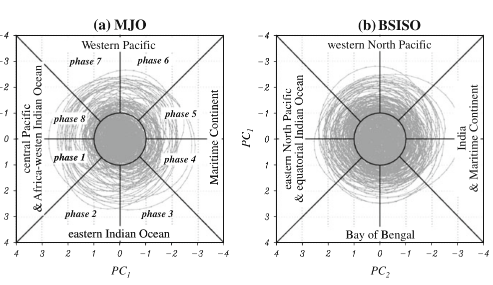
图7 1979–2009年期间，（a）MJO模态（PC2，PC1）和（b）BSISO模态（PC1，PC2）状态的相空间表示。
Fig. 7 Phase space representation of the state of (a) the MJO mode (PC2, PC1) and (b) the BSISO mode (PC1, PC2) for the period 1979–2009.
划分为八个位相的季节内振荡状态用于后续讨论。
The state of the ISO categorized as eight phases are used for the following discussion.
还标示了若干位相时主要对流区域的大致位置。
The approximate positions of the major convective area at some phases are also denoted.
注意，为获得EEOF，各PC均以进行相应EEOF分析期间对应PC的一个标准差进行归一化。
Note that each PC is normalized by one standard deviation of the corresponding PCs during the period each EEOF analysis was performed to obtain the EEOFs
按照第4.1节所述的方法识别了显著MJO和BSISO事件。
Significant MJO and BSISO events were identified in the way described in Sect. 4.1.
MJO模态和BSISO模态的合成生命周期（图8）与先前研究中的结果吻合良好。
The composite life cycles of the MJO mode and the BSISO mode (Fig. 8) are in good agreement with those in previous studies.
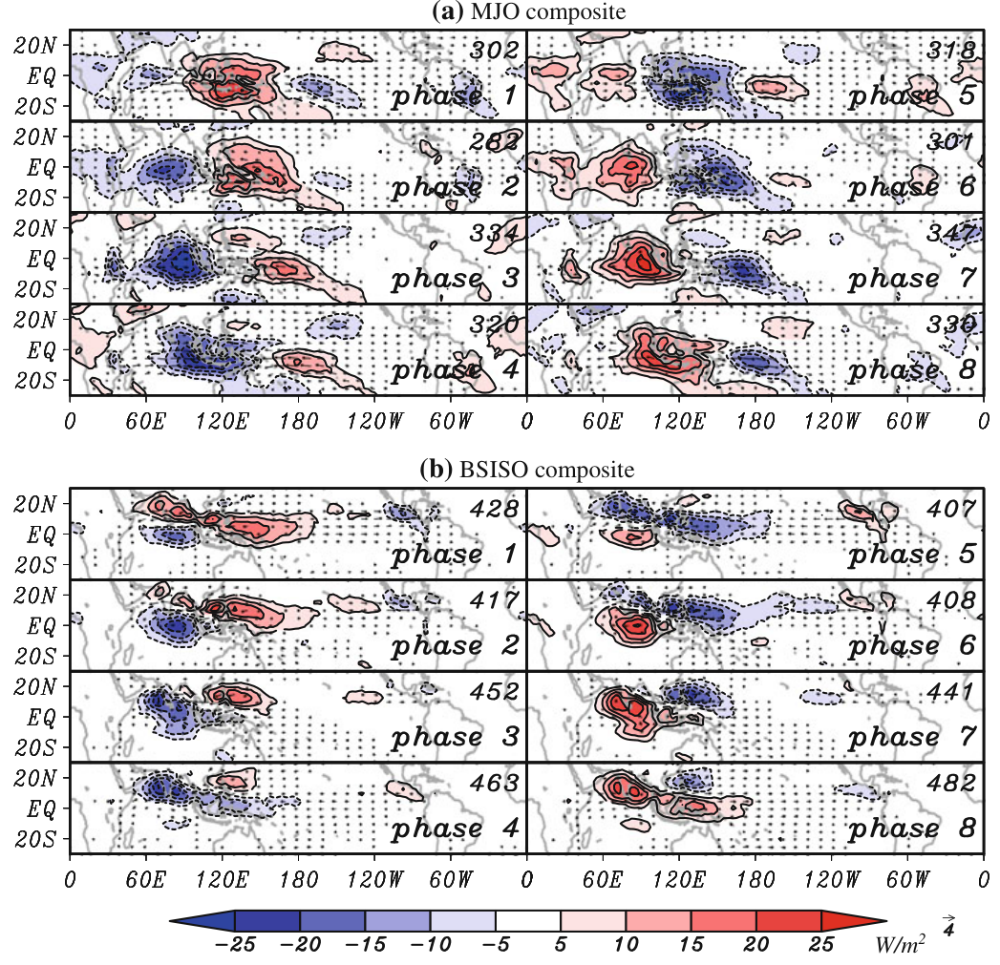
图8 （a）MJO模态和（b）BSISO模态的合成生命周期。
Fig. 8 Composite life cycle of (a) the MJO mode and (b) the BSISO mode.
OLR距平（阴影和5 W m⁻²等值线）以及850 hPa水平风（矢量）。
OLR anomalies (shades and contours of 5 W m⁻² ) and 850 hPa horizontal winds (vectors).
仅绘制根据t检验在99%水平上显著的数值，其自由度为合成样本数的六分之一（考虑了持续性）。
Significant values at the 99% level according to the t test with degree of freedom being one sixth of the number of composite samples (taking into account of persistence) are only drawn.
合成样本数标示在每个图的右上角。
The number of composite samples are denoted in the upper right corner of each panel
显然，MJO模态和BSISO模态具有不同的传播倾向，因而具有不同的生命周期。
It is clear that the MJO mode and the BSISO mode have different propagation tendencies, and thus life cycles.
与MJO模态相关的对流距平在位相1时开始出现在非洲—西印度洋上空。
A convective anomaly associated with the MJO mode starts to appear over Africa-western Indian Ocean at phase 1.
随后，它继续向东移动至日期变更线（位相8），始终局限于赤道附近及沿赤道地区，同时伴有关于赤道近似对称的耦合Kelvin–Rossby波响应。
Then it continues to move eastward to the date line (phase 8) all trapped near and along the equator with coupled Kelvin-Rossby wave response nearly symmetric about the equator.
在该合成中，西半球对流距平的东传未必明显；而在更强调西半球ISO行为的合成中，可能会出现对流的绕全球信号（Kikuchi and Takayabu 2003）。
Eastward propagation of the convective anomaly in the western hemisphere is not necessarily apparent in this composite, while a circumglobal signal in convection may appear in a composite with more emphasis on the ISO behavior in the western hemisphere (Kikuchi and Takayabu 2003).
与BSISO模态相关的对流距平在第1位相开始出现在赤道中部印度洋。
A convective anomaly associated with the BSISO mode starts to appear in the equatorial central Indian Ocean at phase 1.
随后，对流在印度洋的向北传播显著，并伴随沿赤道的微弱向东传播（第2–4位相），从而形成一条西北—东南向的狭长对流带。
Then northward propagation of the convection is pronounced in the Indian Ocean with a weak eastward propagation along the equator (phase 2–4), which makes an elongated northwest–southeast band of convection.
对流距平的东南部分在第5位相于南海和菲律宾海上空再次增强。
The southeastern part of the convective anomaly re-intensifies over the South China Sea and the Philippine Sea at phase 5.
向北传播似乎主导印度洋和西太平洋，其显著特征是赤道印度洋与菲律宾海之间的OLR跷跷板型变化。
Northward propagation appears to dominate over the Indian Ocean and the western Pacific with a salient feature of OLR seesaw between the equatorial Indian Ocean and the Philippine Sea.
伴随的环流以非对称的耦合开尔文–罗斯贝波响应为特征，且在北半球的振幅较强。
The accompanied circulation is characterized by asymmetric coupled Kelvin-Rossby wave response with stronger amplitude in the northern hemisphere.
此外，可以看到对流沿横贯北太平洋的ITCZ微弱地向东传播。
In addition, a weak eastward propagation of convection can be seen along the ITCZ traveling the North Pacific.
5.2 年变化5.2 Annual variation
讨论了双模态ISO指数如何表征ISO的年变化。
How the annual variation of the ISO is represented by the bimodal ISO index is discussed.
讨论包括对该方法的有效性检验以及科学发现。
The discussion includes a validity check of the method as well as scientific findings.
具体考虑的问题如下：（1）双模态ISO指数是否在全年中公平地选取ISO事件？
Specific questions to be considered are the following: (1) Does the bimodal ISO index choose ISO events fairly throughout the year?
（2）MJO（BSISO）模态是否从不在北半球夏季（冬季）占主导？
(2) Does the MJO (BSISO) mode never predominate during boreal summer (winter)?
（3）主导ISO模态何时倾向于从一种状态转变为另一种状态？
(3) When does the predominant ISO mode tend to shift one regime to the other?
图9展示了按日历月变化的、被分配给MJO模态和BSISO模态的显著ISO事件的平均数目；这些事件用于构建合成（图8）。
Figure 9 shows the average numbers of significant ISO events assigned to the MJO mode and the BSISO mode, which were used to construct the composite (Fig. 8), as a function of calendar month.
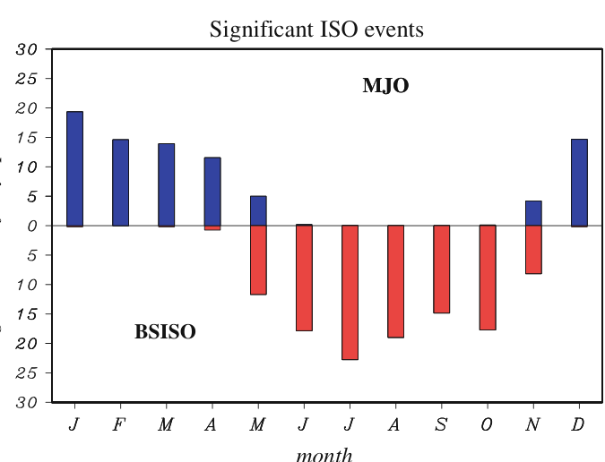
图9 一个月中存在显著季节内振荡的平均日数。
Fig. 9 Average number of days during which significant ISO is present in a month.
对日数进行归一化，使其等于1979–2009年期间被划分为显著MJO模态（上）或显著BSISO模态（下）的日数与可用日数之比，再乘以平年该月的日数。
The days are normalized such that they are the ratio of the number of days classified as the significant MJO mode (upper) or significant BSISO mode (lower) to the available number of days during 1979–2009 times the number of days in the month of common year
显著ISO日的总数（MJO加BSISO）在全年中变化很小。
The total number of significant ISO days (MJO plus BSISO) varies little throughout the year.
发现了ISO类型年循环的清晰转变：从12月至4月，几乎所有ISO事件都被分配给MJO模态；而从6月至10月，几乎所有ISO事件都被分配给BSISO模态。
A clear transition of the annual cycle of the ISO type is found: from December to April almost all ISO events are assigned to the MJO mode, while from June to October almost all ISO events are assigned to the BSISO mode.
5月和11月似乎是过渡月份。
May and November appear to be transitional months.
当然，上述特征与图4一致。
Of course, the feature addressed above is consistent with Fig. 4.
6 实时监测6 Real time monitoring
由于ISO对其他现象具有相当大的影响，例如热带气旋生成和季风系统的活跃—间歇循环，因此监测实时ISO的状态具有极大的实际重要性。
Since the ISO has considerable effect on other phenomena such as tropical cyclogenesis and active-break cycles of monsoon systems, monitoring the state of the real-time ISO is of great practical importance.
在实时监测中，提取与ISO相关的变率是至关重要且富有挑战、必须完成的过程；常规时间滤波器并不实用，因为它们需要未来的数值。
In real time monitoring, extraction of variability associated with the ISO is the crucial and challenging process to accomplish; ordinary time filters are impractical because they require future values.
或者，从本质上说，需要通过处理来去除高频和低频变率。
Alternatively, in essence, processes are required to remove higher- and lower-frequency variability.
在开创性工作中，WH04使用在15°S–15°N范围内作经向平均的多变量（OLR以及200和850 hPa的纬向风）来去除高频变率；在平均后的多变量中，具有与ISO相似结构的高频变化较少。
In the pioneering work, WH04 used multivariables (OLR and zonal winds at 200 and 850 hPa) meridionally averaged over 15°S–15°N to remove higher-frequency variability; fewer higher-frequency variations have a structure similar to the ISO in the averaged multivariables.
此外，他们减去气候平均值和年循环以去除季节循环的影响，减去与SST中厄尔尼诺度量线性相关的年际变率以去除厄尔尼诺的影响，并减去此前120天的120日平均，以去除年际变率、年代际变率和趋势的任何进一步成分。
In addition, they subtracted the climatological mean and annual cycle to remove the influence of the seasonal cycle, interannual variability linearly correlated with a measure of El Niño in SST to remove the influence of El Niño, and a 120 day mean of the previous 120 days to remove any further aspects of interannual variability and decadal variability and trend.
另一方面，双模态ISO指数原本并非旨在为实时监测而开发；然而，我们发现它可以很容易地应用于该目的。
The bimodal ISO index, on the other hand, was not intended to be developed for real time monitoring, however, we found that it can be easily applied for that purpose.
采用当前设置的EEOF分析对有组织对流的时空演变提供了强约束；这种演变为ISO所特有，因而与厄尔尼诺等较短和较长时间尺度上的其他现象几乎不共享。
The use of the EEOF analysis with the current setting provides a strong constraint on the spatial-temporal evolution of organized convection which is unique to the ISO and thereby is little shared with other phenomena on shorter and longer timescales such as El Niño.
最后，用于实时监测的OLR距平场可通过如下较为简单的处理获得：减去基于1979–2009年记录期的气候平均值及气候年循环的三个谐波；减去此前40天的40日平均以去除低频变率；并施加5日锥形滑动平均以去除高频变率。
In the end, the OLR anomaly field used for real time monitoring can be obtained by somewhat simpler processes as follows: subtraction of climatological mean and three harmonics of the climatological annual cycle based on the period of record 1979–2009, and a 40 day mean of the previous 40 days to remove lower frequency variability, and applying 5 day tapered running mean to remove higher frequency variability.
减去平均值所采用的天数（40）是基于对季节内时间滤波场与用于实时监测的距平场之间关系的统计分析确定的。
The number of days of the mean subtraction (40) was determined based on a statistical analysis of the relationship between the intraseasonal time-filtered field and the anomaly field for real time monitoring.
MJO模态和BSISO模态的实时PC可通过将由具有−10、−5和0日滞后的3个时间步组成的OLR距平场，投影到从季节内时间滤波的历史资料中导出的各模态上而获得（第4.1节）。
Real time PCs of the MJO mode and the BSISO mode can be obtained by projecting the OLR anomaly fields consisting of 3 time steps with -10, -5, and 0 day lags onto each mode derived from the intraseasonal time-filtered historical data (Sect. 4.1).
图 10¹ 展示了一个实时监测示例。
An example of real time monitoring is shown in Fig. 10.¹
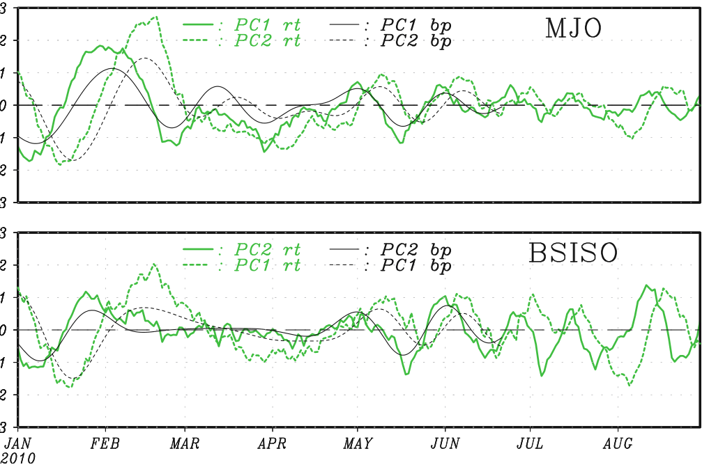
图10 以（上）MJO模态和（下）BSISO模态表征的季节内振荡实时监测。
Fig. 10 Real time monitoring of ISO in terms of (upper) the MJO mode and (lower) the BSISO mode.
绿线表示各时刻实时PC的时间序列，黑线表示完整带通滤波场的PC时间序列。
Green lines represent time series of real time PCs at each time and black lines represent time series of PCs of a complete bandpass filtered field.
端点前70天内的带通滤波场不可用。
Bandpass filtered fields within 70 days of the end point are not available
显然，两种模态的实时监测时间序列主要捕捉季节内变化，并且与季节内时间滤波后的（最终）产品具有良好相关性。
It is evident that the real time monitoring time series of both modes primarily capture intraseasonal variations and are well correlated with intraseasonal time-filtered (final) products.
1979–2009年期间30年资料的统计分析支持了这一观点（表3）。
That notion is supported by a statistical analysis of 30 year data during 1979–2009 (Table 3).
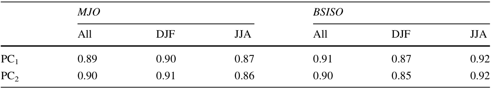
表3 1979–2009年实时监测与带通滤波时间序列之间MJO模态和BSISO模态的序列相关：MJO：全部 DJF JJA；BSISO：全部 DJF JJA。PC1：0.89 0.90 0.87 0.91 0.87 0.92。PC2：0.90 0.91 0.86 0.90 0.85 0.92
Table 3 Serial correlations of the MJO mode and the BSISO mode between real time monitoring and bandpass filtered time series for 1979–2009 MJO BSISO All DJF JJA All DJF JJA PC1 0.89 0.90 0.87 0.91 0.87 0.92 PC2 0.90 0.91 0.86 0.90 0.85 0.92
实时监测与最终产品之间的相关性相当高（约0.9），尤其是在每种模态的目标季节（例如，MJO模态的DJF）。
The correlations between the real time monitoring and the final products are substantially high (~0.9), especially in the target season of each mode (e.g., DJF for the MJO mode).
因此，双模态ISO指数为实时监测提供了可靠的客观度量。
Thus the bimodal ISO index provides a reliable objective measure for real time monitoring.
若基于诸如 Arguez et al. (2008) 开发的复杂技术，对数据作进一步细致处理以去除高频和低频分量，甚至可能改善实时监测中的性能。
A further careful treatment to remove higher- and lower-frequency component based on a sophisticated technique such as the one developed by Arguez et al. (2008) may even improve the performance in real time monitoring.
7 总结7 Summary
为准确反映热带季节内振荡（ISO）的年变化，提出了一种双模态 ISO 指数，该指数依赖于 ISO 对流具有不同生命周期的两个模态。
To accurately reflect the annual variation of the tropical intraseasonal oscillation (ISO), a bimodal ISO index is proposed, which relies on two modes with distinct life cycles of the ISO convection.
利用扩展经验正交函数（EEOF）分析，对31年（1979–2009年）的 OLR 数据识别出各模态。
Each mode was identified with the extended empirical orthogonal function (EEOF) analysis for 31 years (1979–2009) OLR data.
MJO 模态代表北半球冬季典型的 ISO 行为，此时东传占主导地位。
The MJO mode represents the typical ISO behavior during boreal winter, when eastward propagation is predominant.
BSISO（北半球夏季季节内振荡）模态代表北半球夏季典型的 ISO 行为，此时北传在北印度洋和西北太平洋上空显著。
The BSISO (boreal summer ISO) mode represents the typical ISO behavior during boreal summer, when northward propagation is prominent over the northern Indian Ocean and western North Pacific.
因此，一年中任一给定时刻的 ISO 状态均可通过 MJO 模态和 BSISO 模态来表述，这为双模态 ISO 指数提供了必要信息。
The state of the ISO at any given time of the year, therefore, can be expressed in terms of both the MJO mode and the BSISO mode, which provides essential information for the bimodal ISO index.
基于该信息，我们进一步说明了如何客观地确定任一给定时刻的主导 ISO 模态。
Based on that information, we further demonstrate how the dominant ISO mode at any given time can be objectively determined.
双模态 ISO 指数与 Wheeler and Hendon（2004）的全年 ISO 指数具有良好相关性，并且还成功突出了 ISO 特征的年变化。
The bimodal ISO index well correlates with the Wheeler and Hendon’s (2004) all season ISO index, and in addition succeeds in highlighting the annual variation of the ISO characteristics.
结果表明，MJO（BSISO）模态几乎仅存在于12月至4月（6月至10月）。
It is shown that the MJO (BSISO) mode exists almost exclusively from December to April (June–October).
5月和11月是气候态过渡月份，此时主导模态从一个转变为另一个。
May and November are climatological transitional months when the predominant mode changes from one to the other.
双模态指数在给定时刻识别主导 ISO 型态的能力，对于理解 ISO 与其他现象之间的相互作用过程可能极为重要。
The ability of the bimodal index to identify the dominant ISO patterns at a given time can be of great importance on understanding interaction processes of the ISO with other phenomena.
例如，考察这种主导模态的季节转换如何及为何发生，可能有助于更好地理解 ISO 与亚洲—澳大利亚季风系统之间的相互作用（例如，Waliser et al. 2009）。
For instance, a consideration of how and why such seasonal transition of the dominant mode occurs may lead to a better understanding of the interaction between the ISO and the Asian-Australian monsoon systems (e.g., Waliser et al. 2009).
还指出，在讨论春季和秋季与 ISO 的相互作用过程时，需要对 ISO 进行细致处理。
It is also suggested that when discussing an interaction process with the ISO in spring and fall, a careful treatment of the ISO is required.
依赖于 ISO 时空型态的 EEOF 分析的使用，似乎带来了一些优势。
The use of the EEOF analysis, which relies on the spatial-temporal patterns of the ISO, appears to add some advantages.
双模态 ISO 指数倾向于选择定义明确的 ISO 事件。
The bimodal ISO index tends to chose welldefined ISO events.
因此，基于双模态 ISO 指数的 ISO 合成生命周期，在两个至日季节中所能解释的方差比基于 WH04 指数的至少多50%。
Consequently, the composite life cycles of the ISO based on the bimodal ISO index can account for more variances than those based on the WH04 index by at least 50% for the two solstice seasons.
同样由于这一特性，双模态 ISO 指数在实时监测中表现可靠。
Also by the same nature, the bimodal ISO index has reliable performance in real time monitoring.
总之，双模态 ISO 指数不仅有助于对历史数据进行进一步研究，也有助于实际应用（例如，实时监测）。
In conclusion, the bimodal ISO index is useful not only for further studies on historical data analyses but also for practical purposes (e.g., real time monitoring).
由于作为关键信息的 ISO 特征经历强烈的季节变化，对全年 ISO 进行细致处理为评估模式对 ISO 的再现能力以及推进我们对 ISO 可预报性的认识提供了基础。
The careful treatment of the ISO over the course of a year provides the basis for assessing models’ reproduction of the ISO and advancing our understanding of predictability of the ISO, because the characteristics of the ISO, which are critical information, undergo the strong seasonal variations.
致谢Acknowledgments
本研究得到 NSF 资助项目 AGS-1005599 和 NOAA 资助项目 NA10OAR4310247 的支持。
This research was supported by NSF Grant AGS-1005599 and NOAA Grant NA10OAR4310247.
日本海洋地球科学技术机构（JAMSTEC）、NASA 通过资助项目 NNX07AG53G，以及 NOAA 通过资助项目 NA17RJ1230，均通过赞助 IPRC 的研究活动提供了额外支持。
Additional support was provided by the Japan Agency for Marine-Earth Science and Technology (JAMSTEC), by NASA through grant NNX07AG53G, and by NOAA through grant NA17RJ1230 through their sponsorship of research activities at the IPRC.
插值 OLR 数据由 NOAA/OAR/ESRL PSD 提供。
The interpolated OLR data are provided by the NOAA/OAR/ESRL PSD.
MERRA 数据由全球建模和同化办公室（GMAO）以及 GES DISC 提供。
The MERRA data are provided by the Global Modeling and Assimilation Office (GMAO) and the GES DISC.
我们还感谢两位匿名审稿人提出的建设性意见。
We also thank two anonymous reviewers for their constructive comments.
同时感谢 Nat Johnson 博士提供编辑协助，并感谢 MJO 工作组成员，尤其是 Matthew Wheeler 博士，就实时监测部分提供的宝贵反馈。
Thanks also go to Dr. Nat Johnson for his editorial assistance and members of MJO working group, especially Dr. Matthew Wheeler, for invaluable feedback on the part of real time monitoring.
术语对照Terminology
| 中文 | English |
|---|---|
| 季节内振荡（ISO） | intraseasonal oscillation |
| 马登–朱利安振荡（MJO） | Madden–Julian Oscillation |
| 北半球夏季季节内振荡（BSISO） | boreal summer intraseasonal oscillation |
| 向外长波辐射（OLR） | outgoing longwave radiation |
| 扩展经验正交函数（EEOF） | extended empirical orthogonal function |
| 主成分（PC） | principal component |
| 对流距平 | convective anomaly |
| 方差占比 | fractional variance |
| 合成生命周期 | composite life cycle |
| 实时监测 | real time monitoring |